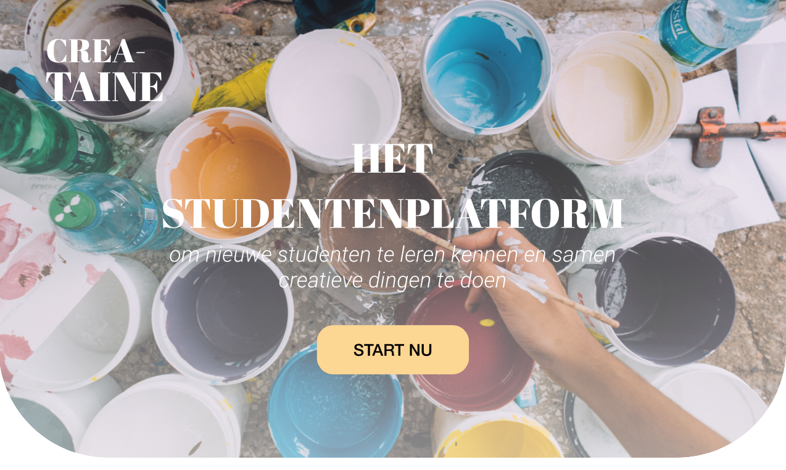

CREA-TAINE
Sinds de opkomst van Covid-19 zien we dat voornamelijk jongeren meer moeite hebben om zich aan de maatregelen te houden. Er is bezorgdheid over de oplopende cijfers, maar de mogelijkheden om gedisciplineerd gedrag te bevorderen zijn beperkt. Aan ons de taak om een oplossing te bedenken zodat jongeren veilig en verantwoord gedrag gaan vertonen. Bij het vak Designing with Purpose dient er een oplossing te komen middels een digitale toepassing. De challenge mag geheel eigen gemaakt worden. Binnen het team hebben we gekeken naar verschillende doelgroepen. Onze focus ligt op alle eerstejaarsstudenten.
Crea-taine is een nieuw platform voor eerstejaarsstudenten om andere studenten beter te leren kennen. Het platform biedt eerstejaarsstudenten de mogelijkheid zich te exelleren in nieuwe skills, bestaande passies en zichzelf te verliezen in creativiteit. Als bonuspunt, mogen zij dat samen doen.
Benieuwd naar het eindresultaat? Bekijk hier de one-pager van CREA-TAINE.